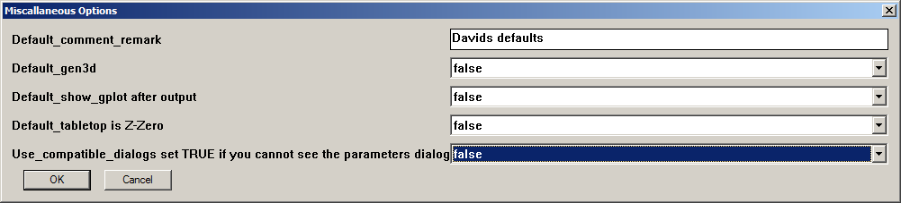
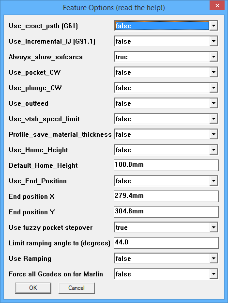

HOWTO set default options
Please note that this mechanism supercedes the Constants.rb and MyConstants.rb files. However, DO NOT DELETE ANY FILES.
Current settings in Constants.rb and MyConstants.rb will be honored but overridden by this new settings mechanism, but the Constants.rb file is still required so please do not delete it.
 SketchUcam system has long had a file called Constants.rb which contains
a long list of constant values. Some of them are used only by the system and are not user settable
while others were designed to be user settings that you set once and forget.
SketchUcam system has long had a file called Constants.rb which contains
a long list of constant values. Some of them are used only by the system and are not user settable
while others were designed to be user settings that you set once and forget.
Current development of the system revealed that Constants.rb will be changing often as new features are added, thus presenting the problem of 'merging' the new file with your existing options such as default safe cut area and so on.
A new system had to be designed and the simplest is to have a secondary constants file in which you set your options. However, this proved to be complicated by changes in Windows 7 and 8, differing paths in Mac and Linux, and other niggles.
Thus the new Options Menu is an evolution of this default options mechanism and allow a user to set default settings that affect their computer or CNC machine environment using simple menus as shown at right.
The Options menu
The Options menu is found under Tools|PhlatBoyz|Options and comprises 5 items with subitems as follows:
- Tool Options
- Things affecting tools
- Misc Options
- Miscallaneous things
- Machine Options
- Things affecting your machine type and size
- Feature Options
- Things you may want to change to get different G-code output options
- Hole Feature Options
- Options that affect plunge hole boring
- File Options
- Default file naming options
Tool Options
 These defaults will only be seen on new drawings.
These settings should reflect your most commonly used cutting tool and material.
These settings can easily be overridden by using the Tool Profiles save and load mechanism.
These defaults will only be seen on new drawings.
These settings should reflect your most commonly used cutting tool and material.
These settings can easily be overridden by using the Tool Profiles save and load mechanism.
- Default_spindle_speed
- This sets the default 'S' word written to the G-code, which sets the spindle speed if your controller supports it.
- Default_feed_rate
- This is the default cutting feed rate in current drawing units per minute.
- Default_plunge_rate
- In hard materials you need a slower plunge feed rate, set it here in drawing units per minute.
- Default_safe_travel
- Height above the workpiece where it is safe to move rapidly to the next cut.
- Default_material_thickness
- The default material thickness in drawing units.
- Default_cut_depth_factor
- Set this to 100% if you are using a table type machine, or 110 to 140% for a Phlatprinter.
- Default_bit_diameter
- Set to your most commonly used bit size.
- Default_tab_width
- Set to 3X your most common bit size.
- Default_tab_depth_factor
- Experience will show you how much tab depth your prefer, set it here.
- Default_vtabs
- Normal tabs have vertical edges, V-tabs ave sloped edges and allow the cutter to keep moving at a constant speed. By setting this to true the default tab style will be Vtab. You can still change it while placing tabs with the END key.
- Default_fold_depth_factor
- Your preferred fold depth factor in %.
- Default_pocket_depth_factor
- Your preferred pocket depth factor in %.
- Default_pocket_direction
- Set this to true to have pocket zigzags default to along Y axis, false for along X axis. This setting can be changed on the fly with the END key.
Misc Options

- Default_comment_remark
- A default text string for the Comment area of the parameters. This will be written in the G-code header.
- Default_gen3d
- This is normally false since most use of SketchUcam is for 2.5D cutting. Set to true if all you do is 3D.
- Default_show_gplot after output
- Set this to true to have the gplot program open with your new G-code file EVERY TIME after generating G-code.
- Default_tabletop is Z-Zero
- Set this TRUE if you want to always zero your tool to the table top instead of the material top. Phlatprinters must use the material top for Z-Zero (set this false), but all other machines can use the table top. If you fit an automatic tool zero sensor level with the table top, Mach3 and LinuxCNC make this very easy to use. Using the table as zero will also all you to generate G-code that can cut many thicknesses of material up to the maximum of the thickness you specified.
- Use_compatible_dialogs set TRUE if you cannot see the parameters dialog
- This one is rather obvious. If the main Parameters Dialog shows up largely blank, you need to set this to true. Mac and Linux users will be most in need of this setting. Linux users running Sketchup under WINE can work around this issue by installing 'winetricks' and then issuing the command 'winetricks ie8'. This will install IE8 and allow the Parameters dialog to work correctly with this setting set to false.
Machine Options
 These options set defaults taken from the size and shape of your CNC machine.
If you have more than one machine, set these to the largest machines values and be careful when generating code for the smaller ones.
These options set defaults taken from the size and shape of your CNC machine.
If you have more than one machine, set these to the largest machines values and be careful when generating code for the smaller ones.
- Default_safe_origin_x
- Normally 0, this is where the safe area is placed by default.
- Default_safe_origin_y
- Normally 0, this is where the safe area is placed by default.
- Default_safe_width (X)
- Set this to the largest workpiece your machine can take in the X direction.
- Default_safe_height (Y)
- Set this to the largest workpiece Y size.
- Default_overhead_gantry
- If all you have is a Phlatprinter, set this to false. If all you have is a gantry type machine, set this to true. If you have both styles, set to the one you use the most.
- Default_laser
- When set on the Laser style Gcode is the default
- Default_multipass
- Set TRUE if you most often do multipass cuts
- Default_multipass_depth
- Set to your preferred multipass cut depth. Note that you can optimize multipass cuts by calculating this figure
so that the last pass is the same size as all other passes.
cuts = Overcut%/100 * MatThickness / Multipassdepth
will give you the number of passes at the current settings. If there are any numbers after the decimal point there will be 1 extra pass with that fraction of the multipass depth as the cut depth.
For example6mm material 2mm multipass depth 110% overcut cuts = 110/100 * 6 / 2 cuts = 3.3
will actually result in 4 passes, with the last pass being only 0.3*2 = 0.6mm deep.To optimize
- Round the number of cuts UP if the material is hard, DOWN if the material is soft
- 3.3 becomes 4 (for hard material)
- new multipass depth = 110/100 * 6 / roundedcuts
110 / 100 * 6 / 4 = 1.65mm
- Set multipass depth to 1.65 to achieve 4 equal passes.
- Default_stepover
- The default percentage of the tool diameter to stepover in pockets and in 3D cuts. Tool manufactuers discourage values between 30 and 70% as this shortens tool life, so for soft material use 70 or more and for hard materials use 30% or less.
- Min_z
- Set this to negative (-) your Z travel. G-code will never contain Z travel more than this figure.
- Max_z
- Set this to your Z travel. G-code will never contain Z travel more than this figure.
- Comments use Bracket(true) or semicolon(false)
- Most CNC controllers accept comments in the form of bracketed text, like this
(this is a G-code comment)
but some prefer to have comments with semicolons, like this
; alternate comment format
Use this option to select what you need for your controller.
NOTE: The G-code previewer included with SketchUcam DOES NOT understand semicolon comments. If you need to use them, do not turn on 'Show Gplot after G-code generation' in the parameters dialog.
NOTE 2: This option is mostly to cater for GRBL. Since GRBL does not accept long lines, all G-code has been shortened to keep lines as short as possible, and long comments will be folded across multiple lines to keep them shorter than 50 characters. - Output Comments
- When this option is set to FALSE, no comments will be output to the G-code file at all.
Feature Options
- Use_exact_path (G61)
- Set this to true to use G61. This will make the machine come to a complete
stop when changing directions instead of rounding out square corners. When
set to false the default for your CNC software will be used. Without G61
the machine will maintain the best possible speed for the cut even if the
tool isn't true to the cut path. Rounded corners at low feedrates aren't
very noticeable but anything over 200 starts to generate large radii so
that the momentum of the machine can be maintained.
Turn this off for GRBL and related controllers. - Use_Incremental_IJ (G91.1) (Mach3 and some other controllers)
- Set this to true to put a G91.1 in the G-code header.
- G91.1 sets the G2/G3 arc commands to incremental mode. Some controllers default to absolute mode but since our G-code uses incremental mode, we have to change the controller mode to incremental mode by giving a G91.1 command.
- Note that this is modal, your controller should remember it once you have set it so you probably do not need it in every G-code file.
- You know you need this command if your controller displays very large circles instead of sort arc segments for curved sections of your drawing.
- G-plot cannot display a file that contains this code. (yet)
- G91.1 sets the G2/G3 arc commands to incremental mode. Some controllers default to absolute mode but since our G-code uses incremental mode, we have to change the controller mode to incremental mode by giving a G91.1 command.
- Always_show_safearea
- Set this to true, if you want the safe area to always show, when parameters are saved.
Otherwise the safe area will only show, if its size has been changed. - Use_outfeed
- Outfeed: phlatprinters only!
Set this to true to enable outfeed. At the end of the job it will feed the material out the front of the machine instead of stopping at X0 with the material out the back.
It will feed to 75% of the material size as given by the safe area settings.
If this is true then Use_End_Position will be forced to false because they cannot be used at the same time. - Use_vtab_speed_limit
- Set this to true if you have an older version of Mach that does not slow down to the Z maximum speed during helical linear interpolation (G2/3 with Z movement A.K.A vtabs on an arc). Vtabs on arcs will cut at the defined plunge rate.
- Profile_save_material_thickness
- Set this to TRUE to have the material thickness saved and restored in Tool Profiles. Profiles that do not contain a material thickness will load just fine.
- Use_Home_Height
- Set this true and set the height and the Z will retract to this at the end of the job
really only useful for overhead gantries.
- Default_Home_Height
- If Use_Home_Height is TRUE, then a G00 Z movement will be issued at the end of the job, using this height for Z.
If you have material top as Z-zero, it will retract this high above the material.
If you have table top as Z-Zero, it will retract this high above the table.
- Use_End_Position
- If this is set true then the values for X and Y below will be used for the final rapid move.
You can use this to move the gantry out of the way at the end of a job for easy material removal.
Set Use_Home_Height true as well to enable a Z height that is higher than the safe height used in the G-code.
NOTE: these values will be limited by your Default_safe_width (X) and Default_safe_height (Y) material size settings.- End position X
- Ending position for X axis.
- End position Y
- Ending position for Y axis.
- Use fuzzy pocket stepover
- TRUE = recalculate the zigzag stepover to prevent remainders at the end of the cut. Read here for details
- FALSE = use the exact stepover% given in the parameters dialog.
- Limit Ramping Angle to (degrees)
- 0 = no limit on ramping angle.
- 1..45 = limit ramping angle to this value. This means it will never be more than this angle, but may be less.
- Read more about ramping
- 1..45 = limit ramping angle to this value. This means it will never be more than this angle, but may be less.
- Use Ramping
- Set this to have the default for new drawings to use ramping for plunge moves.
- Force all G-codes on for Marlin
- FALSE (default) = use optimized G-code output that does not repeat G commands if they are not needed
- TRUE = force output of G code on all lines, useful for Marlin firmware that requires this.
- End position Z for G53 (new in V1.5)
- When home switches are used raising Z to 0 may trigger the limit switch. Use this setting to set an offset for the G53 safety moves so that the limit will not be hit. This offset it ALWAYS negative since machine Z=0 is at the top of travel. Thus a move to just short of Z0 is a negative figure.
Hole Feature Options
 Some options that affect plunge hole feature Gcode generation.
Some options that affect plunge hole feature Gcode generation.Note that the Ramping and stepover% settings also affect how hole boring is generated. Read more here
- Use_reduced_safe_height
- Set this to true to use the minimum of 0.5mm or 1/3 of the usual safe travel height during plunge boring moves.
- Use fuzzy hole stepover
- FALSE = spiral hole boring will use the exact stepover percentage given in the parameters dialog.
This may create a very small depth of cut for the last cut.
- TRUE = the stepover will be adjusted to give a whole number of steps of equal size.
If stepover% is less than 50% then the number of steps will be rounded UP to give a smaller stepover, for hard materials.
If stepover% is greater than 50% then the number of steps will be rounded DOWN, for soft materials.
If stepover% is 50%, then no stepover rounding will be performed. - TRUE = the stepover will be adjusted to give a whole number of steps of equal size.
- Output helixes as quarter arcs
- TRUE (default) = output spiral boring helixes as quarter arcs, 4 arc segments per revolution. This prevents
controllers getting confused about doing a full circle.
- FALSE = output helixes as a full circle code. Do not use this with LinuxCNC and test carefully before trusting.
- Use QuickPeck drill cycle
- FALSE : plunge hole drill cycles will use full retract to above the surface of the material
- TRUE : plunge hole drill cycle will use a small (0.5mm) retract, staying below the material surface. Effectively just a 'pause'. This makes drilling faster, but may not clear chips properly in some materials, use with caution. Do not use with straight flute bits.
- Use Depth first(true) or Diam first(false)
- This affects bored holes that are larger than the bit diameter
- TRUE : use a depth first method. For each step over of the bit, the hole will be helical bored to depth before doing the next step over.
- FALSE : use a diameter first method. First helical bore 2xbitdiam to final depth. Then, for each multipass depth, spiral out to final diameter before doing the next pass. If multipass is off this will do a full depth spiral cut which is the fastest way to bore a large hole. For harder materials with multipass this method is recommended.
- TRUE : use a depth first method. For each step over of the bit, the hole will be helical bored to depth before doing the next step over.
- LASER - plunge hole dwell time (ms)
- When laser control G-code is generated, plunge holes (of all sizes) become a single burnt dot (unless GRBL mode is true).
- The depth of the burn will depend on the time spent stationary at that position.
- Set the default dwell time here, in milliseconds (1000 = 1 second).
- See more about Laser control
- NOTE: when the dwell time is less than 1 second, say 750 milliseconds, then the Gcode is output as
G4 P0.75
and GPLOT does not understand this format and will produce an error message, failing to display the file.
To see your G-code, set the dwell time to 1000, generate G-code, preview, once satisfied, set the dwell to what you really need and generate G-code for cutting. We are working on modifying GPLOT but this will take some time. - The depth of the burn will depend on the time spent stationary at that position.
- LASER - GRBL 1.1 mode (new in 1.4c)
- GRBL 1.1 features a dedicated laser mode. In this mode the laser will not be turned on unless a G1/G2/G3 is in motion.
This means that burning just a spot with a G4 delay will not work.
- TRUE : G-code is output to draw a small circle, 0.2mm diameter, at the location of the hole.
- FALSE: G-code is output to burn a hole using a G4 delay at the location of the hole.
- In both modes, if the hole is larger than bit diameter then a circle of that diameter will be drawn.
The laser power will also be scaled according to the hole depth setting, as for lines.
(note that Gplot will not display these holes as circles, but the G-code is correct, this is a Gplot bug) - TRUE : G-code is output to draw a small circle, 0.2mm diameter, at the location of the hole.
- LASER- GRBL M4 power control mode
- GRBL 1.1 has the option to scale laser power according to the acceleration rate.
This prevents over-burning in corners.
- GRBL uses the M3 command to control the laser in simple on/off mode
- GRBL uses the M4 command to control the laser in power scaled mode.
- Set this option true (and the GRBL mode one above) to generate G-code that uses M4 commands.
- GRBL uses the M3 command to control the laser in simple on/off mode
- Reduce feedrate in arcs (V1.5)
- When an arc is similar in radius to the tool, the edge of the tool travels
much faster than the set feedrate.
- This option will scale the feedrate down in arcs to compensate for the circumferential speed difference.
- Minimum scale is 10% of the feedrate. If the scale is less than 10% then 10% of the feedrate is used.
- Maximum scale is 80% of the feedrate. If the scale is greater than 80% then the full feedrate is used.
- This will affect 'inlets' on outside cuts, ie rounded outside corners will not be feedrate adjusted.
- On inside cuts rounded corners will be adjusted but an inlet will not be adjusted.
- Plunge holes with diameter larger than the bit will use scaled feedrates for each diameter that is cut.
- This option will scale the feedrate down in arcs to compensate for the circumferential speed difference.
File Options
 Some options that affect saving G-code files.
Some options that affect saving G-code files.
- Default_file_name
- The default G-code file name, with extension
- Default_file_ext
- The default extension to use for G-code files. This will be added to the name if you do not give an extension in the save dialog.
- Default_directory_name
- The default directory to save G-code into. Make sure it exists!
- G-code plotter program
- By setting a path to a program that can display G-code files you can use any program that takes
a G-code file as a parameter for preview.
- Set this to 'default' to use the supplied Gplot.exe preview program
- Set it to the full path and filename of an alternative G-code previewer that takes the name of the G-code file as the first parameter.
- Set this to 'default' to use the supplied Gplot.exe preview program